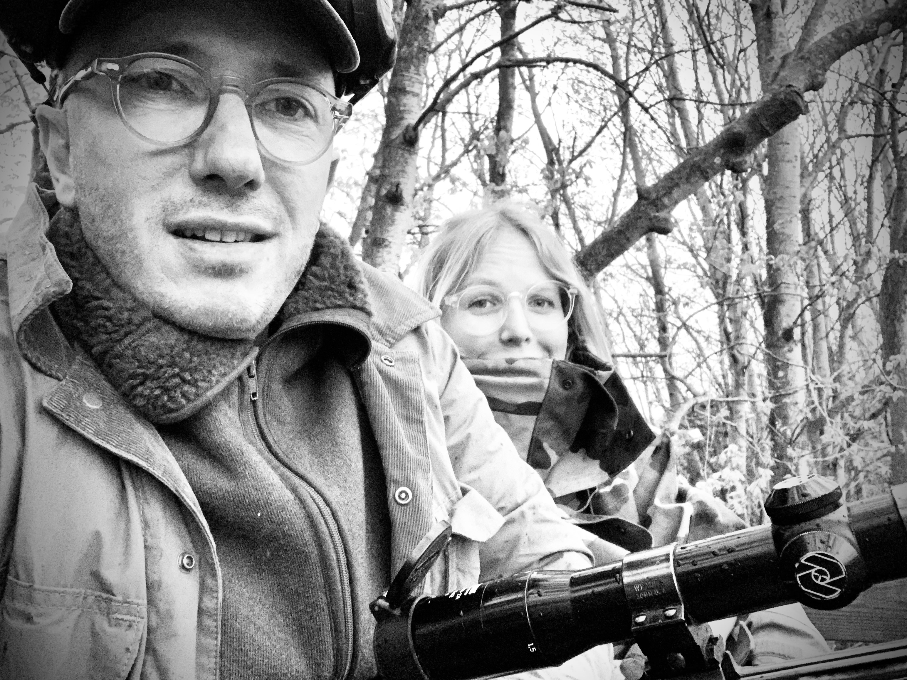

Undervisningen varetages af Aleksander Sønder – certificeret jagttegnsunderviser og skydeinstruktør. Aleksander er passioneret jæger med knap 30 års erfaring med jagt og en særlig forkærlighed for ande- og kronvildtsjagt i Thy. Han bor på Østerbro med sin familie og jagthunden Amy.
Hans undervisning kombinerer praktisk træning med online quizzes, der gør teorien tilgængelig og engagerende. Aleksander er også udvikler bag læringssystemet OS Jagttegn, der hjælper jagttegnselever i hele landet med at træne pensum.

Undervisningen er varieret og engagerende, og alt obligatorisk stof gennemgås grundigt. Du præsenteres for praktiske værktøjer og teknikker til effektiv forberedelse – gennem øvelser, diskussioner og demonstrationer – til både den teoretiske og praktiske del af jagtprøven.
Holdene er små med maks. 10 deltagere, og kurserne er tilrettelagt med mindst mulig gene for familie- og arbejdsliv.
Undervisningen følger pensum fastsat af det ansvarlige ministerium. Alle deltagere får adgang til komplet materiale: præsentationer, lovtekster og tests. Der er ikke behov for at købe supplerende materiale.
Den teoretiske undervisning foregår i et kælderlokale i Soldalen (mellem Strandvejen og Øresund), på grænsen mellem Østerbro og Hellerup – tre minutters gang fra Svanemøllen St. og med direkte adgang fra motorvejen (Nordhavnstunnellen). Området har tre timers gratis parkering.
Afstandsbedømmelse og lerdueskydning afvikles dels i Mindelunden på Østerbro og i smukke omgivelser ved Hørsholm og Omegns Jagtforenings skydebane ved Sjælsø (25 min nord for Kbh).